CSAPP深入理解计算机系统·CSDN
第二章：信息的表示和处理
- 三种最常用的表示数字的方法：
- unsigned无符号整型
- two's-complement，2的补码
- 1的补码——反码，例如+1是0000 0001，-1就是1111 1110。这种表示法，0有两个形式：0000 0000和1111 1111。范围是（-127~127）
- 2的补码——补码，在1的补码的基础上，把-0的位置给-1，多了一个位置给-128。范围是（-128~127）
- 浮点型：2为基的科学记数法，用以表示实数
- bit-level operations in C：
- 与 &
- 或 |
- 非 ~
- 异或 ^：两个一真一假时为真
- logical operations in C:
- 与 &&
- 或 ||
- 非 !
- shift operations in C：
- 左移时右边补0
- 右移分为两种情况：
- 逻辑右移：即右移时左边补零；
- 算数右移：即右移时左边补最高位的值。
第三章：机器级的代码表示
- leaq，类似mov，但是不引用源操作数寄存器的值
- 位的运算
- addq Src, Dest //Dest = Dest + Src
- subq Src, Dest //Dest = Dest - Src
- imulq Src, Dest //Dest = Dest * Src
- salq Src, Dest //Dest = Dest<<Src 也称为shlq
- sarq Src, Dest //Dest = Dest>>Src 算数右移
- shrq Src, Dest //Dest = Dest<<Src 逻辑右移
- xorq Src, Dest //Dest = Dest ^ Src
- andq Src, Dest //Dest = Dest & Src
- orq Src, Dest //Dest = Dest | Src
- 特殊算术运算：
- imull S //有符号全64位乘法
- mull S //无符号全64位乘法
- cltd //convert long to double转为4字
- idivl S //有符号除法
- divl S //无符号除法
- 跳转指令
- jmp Always jump
- ja Jump if above(unsigned >)
- je/jz Jump if eq / zero
- jae Jump if above / equal
- jne/jnz Jump if !eq / !zero
- jb Jump if below(unsigned <)
- jg Jump if greater
- jbe Jump if below / equal
- jge Jump if greater / eq
- js Jump if sign bits is 1(neg)
- jl Jump if less
- jns Jump if sign bit is 0 (pos)
- jle Jump if less / eq
第三章 栈帧
- pushq Src 指令：
- 获取Src处的操作数
- 将%rsp值减8
- 在%rsp指向的地址处写入操作数
- popq Dest 指令：
- 读取%rsp指向的地址处的值
- 将%rsp值加8
- 将读取的值存入Dest（通常是个寄存器）
int add(int a, int b)
{
int result = a + b;
return result;
}
int main(int argc)
{
int answer;
answer = add(40, 2);
}
// 栈帧的变化见下面的幻灯片
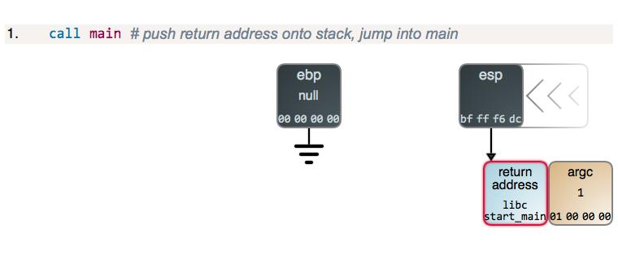
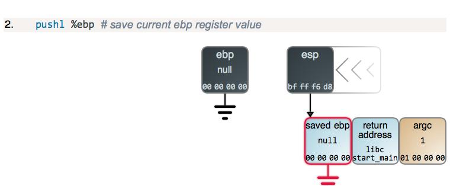
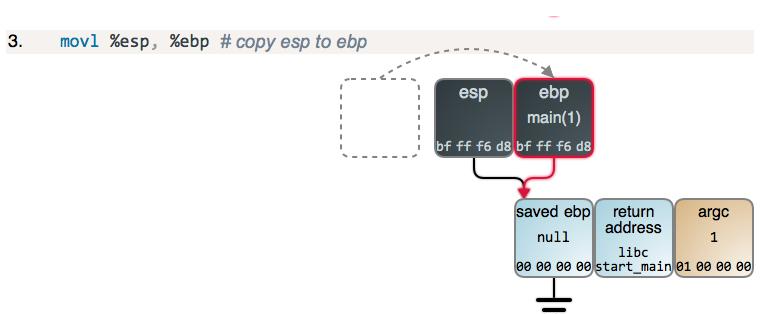
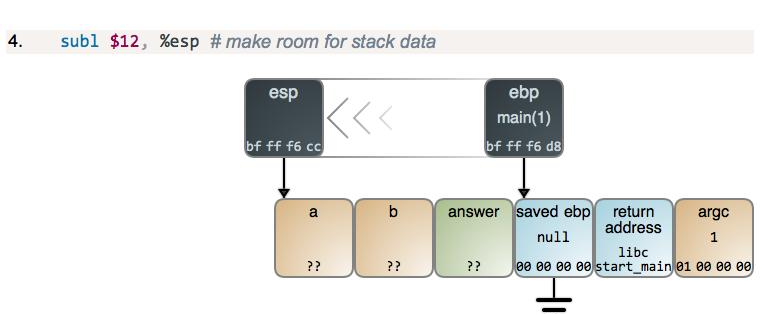
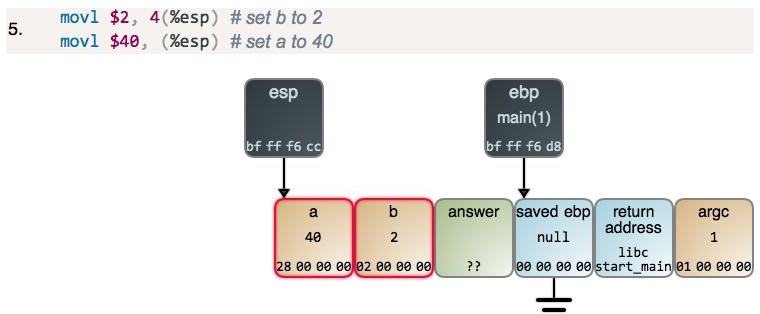
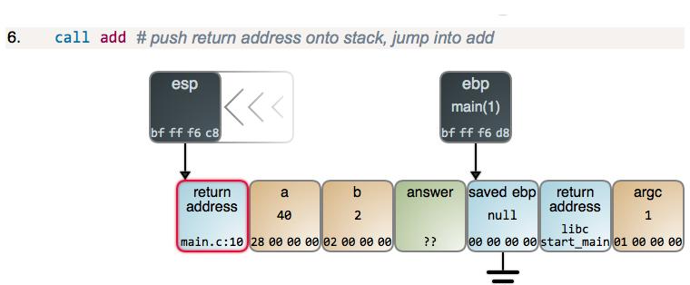
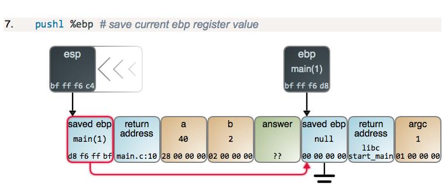
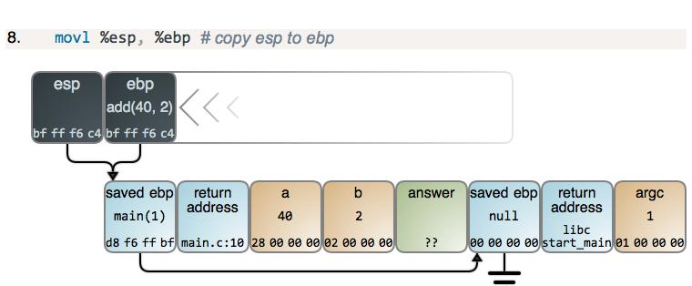
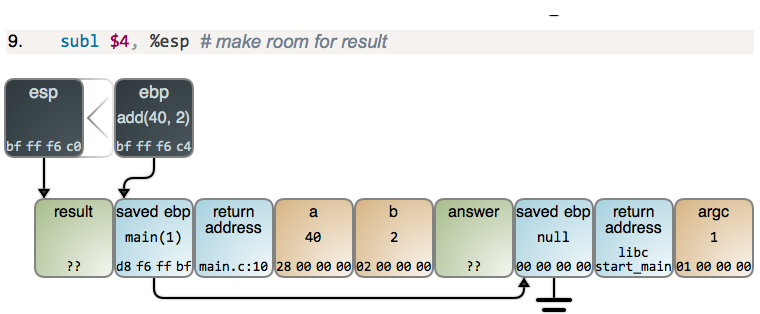
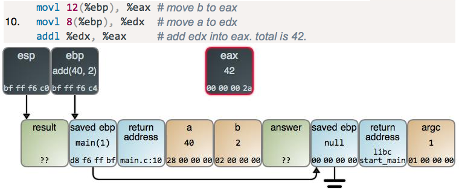
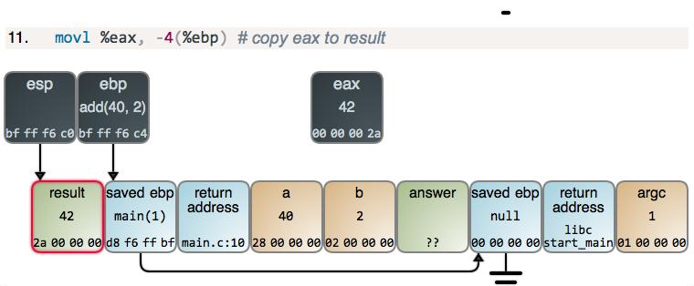
- 在运行时，每一栈帧将对应两个寄存器：
- %ebp指向的单元保存上一栈帧的%ebp；
- 在进入下一函数前，%esp指向的单元保存当前栈帧的返回地址。
- 栈帧中的内容(高地址~低地址)：
- %ebp+4，返回地址
- %ebp，上一栈帧的%ebp
- 局部存储信息（如果需要的话），比如寄存器的值
- 暂时的空间（如果需要的话），比如局部变量
- 调用其他函数时可能需要的参数
- 管理方法：
- 当进入某一过程时开辟空间
- set up 代码
- call指令包含了push
- 离开过程时释放空间
- finish 代码
- ret指令包含了pop
- 当进入某一过程时开辟空间
- 函数的参数用哪些寄存器来存放呢？
- 按惯例，前6个arguments存放在：%rdi、%rsi、%rdx、%rcx、%r8、%r9
- 超过了6个，更多的参数则存放到栈中
- 函数的返回值使用寄存器%rax来保存
- 在函数调用时由谁保管暂时值？
- “caller saved”：由caller在它自己的frame中保管暂存值，在执行call之前保管
- “callee saved”：由callee在它的frame中保管；callee负责在返回给caller时恢复寄存器们的值
第十章 系统级IO
- 文件类型：
- regular file：包含任意数据；
- directory：相关的一组文件的索引；
- socket：为了与另一台机器上的进程通信
- 其他格式：Named pipes（FIFOs）、Symbolic links、Character and block devices
- read和write传送的字节数比应用程序要求的少，返回的值称为“不足值”（short count），这些情况有：
- 读时遇到EOF，此时读函数返回0以表示读到了文件末尾；
- 从终端读文本行。若打开文件是与终端相关联的，那么每个read函数将一次传送一个文本行，返回的不足值等于文本行的大小。
- 读和写网络套接字（socket）。若打开的文件对应于网络套接字，那么较长的网络延迟和内部缓冲约束会引起read和write返回不足值。
- 对unix管道调用read和write时也可能出现不足值。
第十一章 网络编程
- 每台主机上有个网络适配器，从网络上接收到的数据经由适配器->I/O总线->存储总线->到达主存。
- 每个适配器有一个唯一的48位地址（MAC address，如f0:18:98:4f:d0:be）
- 当它发送一段位（帧）到网段上的任何主机时，每个主机适配器都能看到这个帧，但只有目的主机实际读取它。
- 这样的多个计算机（host）由一些电缆连接到一个集线器（hub）构成的网络称为以太网段，这是最底层的网络结构。
- 集线器（hub）的功能本质上就是个复读机+广播，它把从任意端口接收到的信息都复制，再广播给其他端口。
- 把不同区域的集线器使用被称作网桥（bridge）（高密度端口的网桥其实就是交换机）
- 集线器只是复读机，而网桥则更聪明，它能学会有选择性地传输信息。到这个层面依然只是局域网（LAN）
- 把不同区域的不兼容局域网采用被称作路由器（router）的盒子连接起来，那就组成了所谓的“互联网”（Internet）
- 基于TCP/IP协议族：
- IP（Internet Protocol）：提供基本命名格式和不可靠的传输机制，是host-to-host的；
- UDP（Unreliable Datagram Protocol）：稍微扩展了IP协议，包可以在process-to-process间传递，而不是在主机间传送；
- TCP（Transmission Control Protocol）：构建在IP协议之上的复杂协议，提供了可靠的process-to-process连接（connections）。
- 上网的流程：
- 主机被映射到一个32位的IP地址：如 172.20.10.9（每个字节写成一个十进制数，例如0x8002C2F2 == 128.2.194.242）
- IP地址被映射为域名：如www.cs.cmu.edu，注：域名与IP地址是多对多的映射。DNS（域名服务器）
- 一个位于网络上的主机上的进程可以通过一个“connection”与另一个主机上的进程进行信息交流。
- 注：32位的IP地址是IPv4（第四代），升级到128位之后称为IPv6
- 网络连接：
- 客户端和服务端是通过“连接”（connections）来传输字节流的。
- 一个套接字是连接的一个端点，每个套接字有相应的套接字地址，由一个因特网地址和一个16位的整数端口组成：IP：port。
- 一个端口用于标记一个进程。当客户端发起连接请求时，其套接字地址中的端口是由内核自动分配，称为临时端口。然而，服务器套接字地址中的端口通常是某个知名端口
- 由客户端发起一个请求：128.2.194.242:80（即网页服务），服务端128.2.194.242的内核收到该信号，建立起与自己的Web server的连接。套接字对：（cliaddr::cliport, servaddr::servport）
- Sockets：
- 对于开发者来说，一个Socket就是一个file descriptor，它使得应用程序能读或者写网络。注：所有Unix I/O设备，包括网络，都被抽象成了文件！
- 对于内核来说，一个socket就是通信的一个端点。
- 常识：
- 集线器淘汰多年，已被交换机彻底取代；
- 路由器内带着一只交换机，功能比交换机强多了；
- 路由器=网络拨号+共享上网+交换机